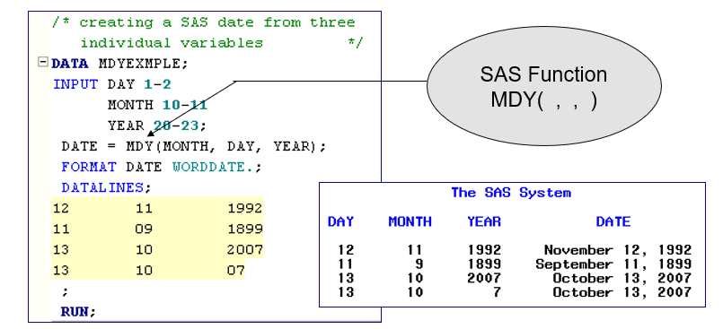
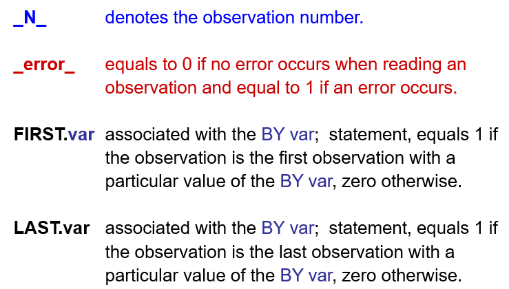
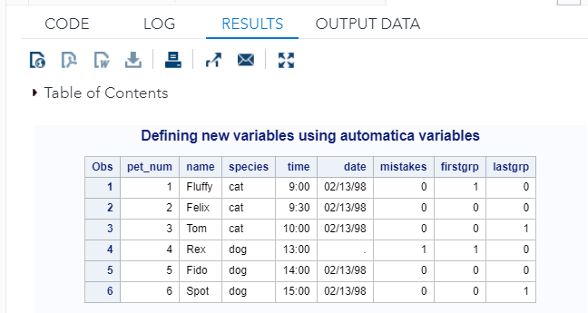
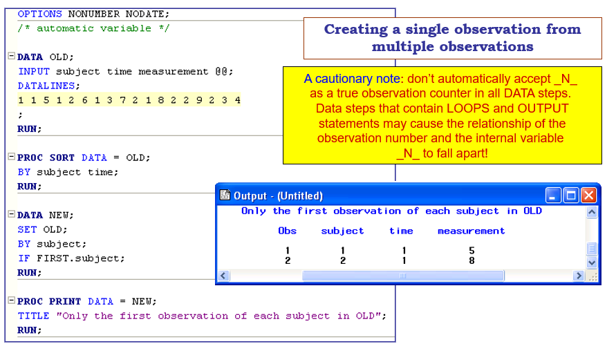
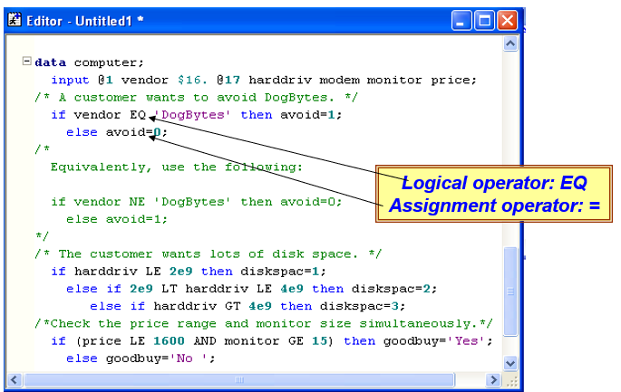

Chapter 10 Modifying Data
In the previous chapter, we introduced methods for manipulating data by either entire rows or entire columns. This chapter will introduce methods for data manipulation by accessing cell elements inside a data table and defining/modifying new variables. Methods include handling SAS dates and times, using automatic variables, calculating new variables, using logical expressions and operators with WHERE statements, etc.
10.1 SAS Functions: Date and Others
Handling SAS dates and times can be a challenging task in data manipulation. There are many different SAS date formats. The most commonly used ones are listed below.
date format
09/19/07 MMDDYY8.
09-19-07 MMDDYY8.
09+19,07 MMDDYY8.
19SEP07 DATE7.
091907 MMDDYY6.
09/19/2007 MMDDYY10.
19/09/07 DDMMYY8.
September 19, 2007 WORDDATE.
Wed, Sept, 19, 2007 WEEKDATEIt is not uncommon that the source data file contains three separate variables representing day, month, and year respectively. Example: Creating a SAS date from month, day, and year.

10.2 Automatic Variables
Automatic variables are created automatically by the DATA step or by DATA step statements. These variables are added to the program data vector but are not written to the output data set. The values of automatic variables are retained from one iteration of the DATA step to the next, rather than set to missing
There are many automatic variables in SAS, the following 4 are very commonly used in data manipulation.

_N_ is an implicit counter. The other three automatic variables are binary logical variables. In the following example, we use _N_ to define an observation ID variable and add it to the data.FIRST.var and LAST.var are used to detect whether an observation is the first or last within the individual group of the categorical variable.
DATA pets1;
INPUT @1 name $9. @10 time time5. @20 date mmddyy8. @30 species $;
mistakes=_error_; /* New variable mistakes=1 if error in reading obs*/
DATALINES;
Fluffy 9:00 02/13/98 cat
Tom 10:00 02/13/98 cat
Rex 13:00 02/31/98 dog
Fido 14:00 02/13/98 dog
Felix 9:30 02/13/98 cat
Spot 15:00 02/13/98 dog
;
RUN;
PROC SORT data=pets1;
BY species time;
RUN;
DATA pets1; /* Make changes to dataset PETS1. */
SET pets1;
BY species;
pet_num=_n_; /* Pet number equal to observation number */
firstgrp=first.species; /* firstgrp=1 if first obs of each species*/
lastgrp=last.species; /* lastgrp=1 if last obs of each species */
RUN;
TITLE "Defining new variables using automatic variables";
PROC PRINT data=pets1;
VAR pet_num name species time date mistakes firstgrp lastgrp;
FORMAT time time5. date mmddyy8.;
RUN;
We can also use automatic variables in a conditional statement to subset a given data set. For example,

10.3 Calculating New Variables
To define new variables using basic mathematical operations and functions. Many mathematical functions are built in base SAS. The following are very commonly used.
Newvar = log(var1); value is natural logarithm of var1
Newvar = log10(var1); value is common logarithm of var1
Newvar = log2(var1); value is base 2 logarithm of var1
Newvar = sqrt(var1); value is square root of var1
Newvar = mdy(month, day, year); create SAS date variable from
individual month, day, and year values.
Newvar = abs(var1); value is the absolute value of var1
10.4 Logical Expressions
We have used logical expressions in conditional statements used in subsetting data sets. The general structure of a logical expression is similar to the following example.
IF logical_condition_true THEN action_1;
ELSE action_2;It is critical to use logical operations correctly in logical expressions.
Logical operators: EQ equals (=)
NE not equal (~=, ^=)
GT greater than (>)
LT less than (<)
GE greater than or equal to (>=)
LE less than or equal to (<=)
AND all comparisons must be true (&)
OR only one comparison must be true (!, |)
Actions: ANY SAS DATA or MACRO statement
(e.g. another assignment, IF, DO …)
The following example uses EQ for logical operation and = for assignment operation.

10.5 Operators with WHERE statement
The WHERE statement selects observations in SAS data sets only, whereas the subsetting IF statement selects observations from an existing SAS data set or from observations that are created with an INPUT statement. WHERE is one of the most powerful statements in SAS. WHERE can be used jointly with many other operators to make more powerful data operations.
This section introduces operators that are commonly used with the WHERE statement.
10.6 Learning Coding by Examples
This section provides a few examples that illustrate the topics introduced in previous sections.
One external data set used in the following example can be found at
https://raw.githubusercontent.com/pengdsci/STA311/main/w07-us-counties.csv
/*********************************************************
Topics: 1. SAS Date and Time Functions
2. Automatic Variables
3. Defining New Variables
4. Variable type conversion
5. Use of Logical Expressions
6. Operators with WHERE statement
7. Real-world application
**********************************************************/
LIBNAME my311 "C:\STA311\w09";
OPTIONS PS = 76 LS = 76 NONUMBER NODATE;
DM "CLEAR LOG";
DM "Clear OUT";
/************************************************/
/** Topic #1. More on Date and Date functions **/
/************************************************/
/* Example 1: MDY() is a SAS built-in function. We can use it to define
(ensemble) an SAS date. */
DATA MDY_FUNCTION;
INPUT DAY
MONTH
YEAR;
DOB = MDY(MONTH, DAY, YEAR);
FORMAT DOB WORDDATE.;
DATALINES;
12 11 1992
11 9 1999
13 10 2007
12 10 7
;
RUN;
PROC PRINT DATA = MDY_FUNCTION;
RUN;
/** Example 2: Commonly used Date formats/informats.
CAUTION: When a fixed date is used in any conditional
statement, the only formats we can specify
are in the 'ddMONyy'd or 'ddMONyyyy'd.
No other forms will work!
**/
DATA More_Date_Formats;
SET MDY_FUNCTION;
DATE01 = DOB;
DATE02 = DOB;
DATE03 = DOB;
DATE04 = DOB;
DATE05 = DOB;
DATE06 = DOB;
DATE07 = DOB;
FORMAT DATE01 MMDDYY8.
DATE02 DDMMYY8.
DATE03 MMDDYY10.
DATE04 DDMMYY10.
DATE05 DATE7.
DATE06 MMDDYY6.
DATE07 WEEKDATE.;
DROP DAY MONTH YEAR;
RUN;
PROC PRINT DATA = More_Date_Formats;
RUN;
/* Example 3. We can also extract the day, month, and year from a
SAS date variable DAY(), MONTH(), YEAR() are three
commonly used built-in SAS functions
We also review the user-defined FORMAT.
*/
PROC FORMAT;
/* Numeric format! */
VALUE WKDAYS 1 = "Monday"
2 = "Tuesday"
3 = "Wednesday"
4 = "Thursday"
5 = "Friday"
6 = "Saturday"
7 = "Sunday";
RUN;
/* For character format, the syntax is */
PROC FORMAT;
VALUE $ CHFRMT "F" = 1
"M" = 0;
RUN;
DATA SPLITTING_DATE;
SET MDY_FUNCTION;
DY = DAY(DOB);
MNTH = MONTH(DOB);
YR = YEAR(DOB);
QUARTER = QTR(DOB);
WKDAY = WEEKDAY(DOB);
FRMT_WKDAY = WKDAY;
FORMAT FRMT_WKDAY WKDAYS.;
RUN;
PROC PRINT DATA = SPLITTING_DATE;
RUN;
/** Example 4: Calculate the difference between two dates.
The functions that can
be used to calculate intervals include:
1. YRDIF(startdate, enddate, 'method') returns the difference in years
between two SAS date values (startdate, enddate) using one of
four methods ('method')
2. DATDIF(startdate, enddate, 'method') returns the difference in days
between two SAS date values (startdate, enddate) using one
of four methods ('method')
3. INTCK('interval', fromdate, todate) returns the number of time
intervals ('interval') that occur between two dates
(fromdate, todate)
4. INTNX('interval', date, increment) applies multiples (increment)
of a given interval ('interval') to a date value (date) and
returns the resulting value, and hence can be used to IDENTIFY
past or future days, weeks, months, and so on.
---- PLEASE READ THE ABOVE DESCRIPTION CAREFULLY BEFORE YOU DO
THE FOLLOWING EXAMPLE!
**/
DATA DIET;
LENGTH name $ 18;
INFILE DATALINES DSD MISSOVER;
INPUT subj 1-4
name $ 6-24
gender 25-26
height 28-29
weight 30-33
+1 wt_date1 mmddyy8.
@43 wt_date2 mmddyy8.
@52 b_date mmddyy8.;
AGE_YRDIF = YRDIF(b_date, wt_date1, 'act/act');
AGE_INTCK = INTCK('year', b_date, wt_date1);
DAYS_DATDIF = DATDIF(wt_date1, wt_date2, 'act/act');
DAYS_INTCK = INTCK('day', wt_date1, wt_date2);
FORMAT wt_date1 wt_date2 b_date date9.;
INT_AGE = ROUND(age_yrdif, 1);
DATALINES;
1024 Alice Smith 1 65 125 12/1/05 03/04/06 01/01/60
1167 Maryann White 1 68 140 12/01/05 03/07/06 01/01/59
1168 Thomas Jones 2 . 190 12/2/05 3/30/06 06/15/60
1201 Benedictine Arnold 2 68 190 11/30/05 2/27/06 12/31/60
1302 Felicia Ho 1 63 115 1/1/06 4/1/06 06/15/58
;
RUN;
PROC PRINT data=diet;
TITLE "The calculation of subject's age";
*var subj b_date wt_date1 age_yrdif age_intck;
RUN;
/************************************************/
/** Topic #2. Automatic Variables **/
/************************************************/
/** Example 1 **/
DATA pets1;
INPUT @1 name $9.
@10 time time5.
@20 date mmddyy8.
@30 species $;
/* New variables defined using automatic variables*/
MISTAKES = _ERROR_; /* Error indicator. */
OBS_SEQ = _N_; /* Observation sequence. */
DATALINES;
Fluffy 9:00 02/13/98 cat
Tom 10:00 02/13/98 cat
Rex 13:00 02/31/98 dog
Fido 14:00 02/13/98 dog
Felix 9:30 02/13/98 cat
Spot 15:00 02/13/98 dog
;
RUN;
PROC PRINT DATA = pets1;
TITLE "Automatic Variables: _N_ and _ERROR_";
RUN;
/** Example 2: FIRST.OBS and LAST.obs - most commonly used
in longitudinal data sets **/
PROC SORT DATA = pets1;
BY species time;
RUN;
DATA pets2; /* Make changes to dataset PETS1. */
SET pets1;
BY species;
pet_num = _n_ ; /* Pet number equal to observation number */
firstgrp = FIRST.species; /* firstgrp=1 if first obs of each species*/
lastgrp = LAST.species; /* lastgrp=1 if last obs of each species */
RUN;
PROC PRINT DATA = pets2;
* VAR pet_num name species time date mistakes firstgrp lastgrp;
FORMAT time time5. date mmddyy8.;
RUN;
/*--------------------------------------------------------/
/* Example 3. A typical clinical trial data set ***/
/* We want to find the duration of individual patient ***/
/* from the first admission and the last discharge ***/
/*-------------------------------------------------------*/
DATA CLINICAL_TRIAL;
INPUT @1 CPID 4.
@5 CSTATE $2.
@7 CHOSPID 3.
@10 CGENDER $1.
@11 CADMIT_D MMDDYY10.
@21 CDISCH_D MMDDYY10.
@31 CFIRST $1.
@32 CMIDDLE $1.
@33 CLAST $1.
@34 CHXDIAB 1.
@35 CDEATH 1.
@36 C60DEATH 1.
@37 C1YRDEATH 1.
@38 CDOB MMDDYY10.
@48 CTHERAPY 1.;
FORMAT CADMIT_D MMDDYY10. CDISCH_D MMDDYY10. CDOB MMDDYY10.;
DATALINES;
400101101M05/16/199605/29/1996U A101010/21/19460
400101101M05/16/199605/21/1996B P100107/08/19651
400101102F06/01/199606/02/1996J R100003/04/19651
400101102F08/15/199608/16/1996VSA100110/10/19561
400102201M07/02/199607/04/1996NIF010006/28/19460
400202202F06/20/199607/02/1996L I000009/06/19630
400202202M08/09/199608/11/1996QQN001007/13/19510
400203301F04/01/200204/02/2002I L110010/09/19080
400203301M07/12/199607/26/1996Q F101007/28/19600
401303302F02/06/199602/07/1996CKH100004/19/19640
401303302M06/03/199606/10/1996F N000108/09/19651
401303302M06/03/199606/10/1996F N000008/09/19651
401304401F05/15/199607/19/1996ZZA100012/23/19660
401304401F02/01/199502/10/1995IOV000101/01/19650
401304402F09/18/199609/19/1996TZP010006/18/19801
401404402F09/18/199609/19/1996TZP0.0106/18/19801
401404402M07/15/199607/24/1996MRT100003/04/19610
401405501F08/15/199608/22/1996CTL100004/05/19630
401405502M07/22/199608/05/1996M F010005/06/19680
402505502F09/11/199609/12/1996SIJ000006/07/19601
402505502F09/11/199609/12/1996SIJ000106/07/19600
402506601M11/18/199611/20/1996BGX100108/09/19820
402506601F03/15/199603/16/1996YJQ110009/09/19680
402606610M10/18/199610/19/1996MEZ100110/10/19311
402601102F06/01/199606/02/1996J R100003/04/19651
402602202F06/20/199607/02/1996L I000009/06/19630
402605502M07/22/199608/05/1996M F010005/06/19680
402606601M11/18/199611/20/1996RGX100108/09/19820
;
RUN;
/** Sort by DOB before you use automatic variables
first.var and last.var **/
PROC SORT DATA = CLINICAL_TRIAL;
BY CPID CADMIT_D; /* sort ID first, then sort by date within each CPID */
RUN;
/** We create two data sets: the first data set contains
the information about the first visit of each patient,
and the second data set has the information about the last
visit. Then merge the two data sets and define the
duration between the first and the last visits. **/
DATA FIRSADMIT LASTDISCH;
SET CLINICAL_TRIAL;
BY CPID;
IF FIRST.CPID THEN OUTPUT FIRSADMIT;
IF LAST.CPID THEN OUTPUT LASTDISCH;
RUN;
PROC PRINT DATA = FIRSADMIT;
RUN;
/* We match-merge the two data sets and keep the variables
relevant to the calculation of the duration. Since
Match-merging requires the BY statement, we sort the
data sets by CPID and then merge the two data sets
and keep only CPID and CADMIT_D in FIRSTVIS and CPID
and CDISCH_D in the LASTVIS */
PROC SORT DATA = FIRSADMIT;
BY CPID;
RUN;
PROC SORT DATA = LASTDISCH;
BY CPID;
RUN;
/** Merging the two data sets **/
DATA FIRSTADMIT_LASTSICH;
MERGE FIRSADMIT(KEEP = CPID CADMIT_D) /*only keep two variables */
LASTDISCH(KEEP = CPID CDISCH_D); /*only keep two variables */
BY CPID;
DURATION = CDISCH_D - CADMIT_D; /* calculate the duration from the first
admission the last discharge dates */
DUR_DATEDIF = DATDIF(CADMIT_D, CDISCH_D, "act/act");
/*using the date function to find the
difference between the two dates */
RUN;
TITLE "Calculating the duration";
PROC PRINT DATA = FIRSTADMIT_LASTSICH;
RUN;
TITLE "";
/**************************************************************/
/** Topic #3. Numerical Operators and Functions **/
/* Common Functions Example
INT: the integer portion of a numeric value a = int(x);
ABS: the absolute value of the argument a = abs(x);
SQRT: the square root of the argument a = sqrt(x);
MIN: the minimum value of the arguments a = min(x, y, z);
MAX: the maximum value of the arguments a = max(x, y, z);
SUM: the sum of the arguments a = sum(x, y, z);
MEAN: the mean of the arguments a = mean(x, y, z);
ROUND: round the argument to the specified unit a = round(x, 1);
LOG: the log (base e) of the argument a = log(x);
LAG: the value of the argument in the
previous observation a = lag(x);
DIF: the difference between the values of the argument
in the current and previous observations a = dif(x);
N: the number of non-missing values of the argument a = n(x);
NMISS: the number of missing values of the argument a = nmiss(x);
/***************************************************************************/
/** Example 1: Define new variables using numerical functions and operators **/
DATA GRADES;
INPUT name $ 1-15 e1 e2 e3 e4 p1 f1;
* calculate the average by definition;
AVG1 = (e1+e2+e3+e4)/4; /* mathematical operations */
* calculate the average using the mean function;
AVG2 = MEAN(e1,e2,e3,e4); /** MEAN is a SAS Mathematical function **/
DATALINES;
Alexander Smith 78 82 86 69 97 80
John Simon 88 72 86 . 100 85
Patricia Jones 98 92 92 99 99 93
Jack Benedict 54 63 71 49 82 69
Rene Porter 100 62 88 74 98 92
;
RUN;
PROC PRINT DATE = grades;
TITLE "New variables defined by functions and operations";
VAR name e1 e2 e3 e4 avg1 avg2;
RUN;
/** Example 2: defining new variables using logical operators **/
DATA GRADES01;
SET GRADES;
IF (AVG2 < 65) THEN status = 'Failed';
ELSE status = 'Passed';
RUN;
PROC PRINT data = grades01;
var name e1 e2 e3 e4 avg2 status;
RUN;
/***********************************************************************/
/** Topic #4. Data Type Conversion **/
/** **/
/** INPUT function converts character values to numeric values. **/
/** PUT function to convert your numeric values to character values **/
/***********************************************************************/
/** Example 1: explicit conversion using INPUT() and PUT() **/
DATA oscars;
INPUT Title $ 1-20
ch_Year $ 23-26
Rating $ 29-32
Duration 35-37
num_gross 40-45;
DATALINES;
Slumdog Millionaire 2008 R 120 141.32
The Hurt Locker 2009 R 131 15.70
The King's Speech 2010 R 118 138.80
The Artist 2011 PG13 100 44.67
Argo 2012 R 120 136.02
12 Years a Slave 2013 R 134 56.67
Birdman 2014 R 119 42.34
Spotlight 2015 R 128 44.99
;
RUN;
/** Checking variable types **/
PROC CONTENTS DATA = oscars;
RUN;
/** Variable conversion: numerical coding **/
DATA Variable_conversion;
SET oscars;
new_num_year = input(ch_year, 5.); /* ch -> num */
new_ch_gross = put(num_gross, 8.2); /* num -> ch */
RUN;
PROC CONTENTS DATA = Variable_conversion;
RUN;
/****************************************************
Topic 5: Contains and Between-And operators
in WHERE statement - subsetting
******************************************************/
/** Example 1 **/
DATA readin;
INPUT name $ Section $ Score;
DATALINES;
Raj A 80
Atul A 77
Priya B 45
Sandeep A 95
Rahul C 84
Shreya C 44
Rahil C 87
Sahil B 49
;
RUN;
DATA readin_Between;
SET readin;
WHERE Score BETWEEN 50 and 90;
RUN;
PROC PRINT DATA = readin_Between;
RUN;
/** Example 2: CONTAINS **/
DATA readin_contains;
SET readin;
WHERE name CONTAINS 'hil';
RUN;
PROC PRINT DATA = readin_contains;
TITLE "CONTAINS operator";
RUN;
/** Example 3: Like **/
/*
WHERE NAME LIKE 慉___?; * 3 underscores
(Selects all names of length 4, beginning with A)
WHERE NAME LIKE 慉_%?;
(Selects all names that begin with A and are at least two
characters in length)
*/
DATA readin_Like02;
SET readin;
WHERE name LIKE '_ah%'; /* value contains string sh starting from the
2nd character! */
RUN;
PROC PRINT DATA = readin_like02;
TITLE "LIKE operator";
RUN;
/** Example 4: Like **/
DATA readin_Like;
SET readin;
WHERE name LIKE 'Ra%';
RUN;
PROC PRINT DATA = readin_like;
TITLE "LIKE operator";
RUN;
/** Example 5: fuzzy testing - wildcard **/
DATA readin_wildcard;
SET readin;
WHERE name =* 'Ral';
RUN;
PROC PRINT DATA = readin_wildcard;
TITLE "LIKE operator";
RUN;
/**************************************************
Real-world Application
We want to calculate the duration of COVID-19 for
EACH COUNTY in the US. The steps are given below:
1. Create a data set that contains the first covid case
2. Define a new variable
DURATION = (09/27) - date of first record
3. we then use PROC MEANS to see the distribution
of the duration.
The dataset is on the course web page. We used this
data set last week. You can download this data and
save it in a local folder that SAS can access.
***************************************************/
/** import all relevant data sets **/
PROC IMPORT OUT= COVID_COUNTY
DATAFILE= "C:\STA311\w09\w07-us-counties.csv"
DBMS=CSV REPLACE;
GETNAMES=YES;
DATAROW=2;
RUN;
/** Check the variable names and type **/
PROC CONTENTS DATA = COVID_COUNTY;
RUN;
/** Need to SORT the data by STATE, COUNTY, FIPS (one-to-one), DATE
Caution: by the order!!!! **/
PROC SORT DATA = COVID_COUNTY;
BY STATE COUNTY FIPS DATE;
RUN;
/** Extract the first record of each individual county and save it
with name: COUNTY_FIRSTOBS **/
DATA COUNTY_FIRSTOBS;
SET COVID_COUNTY;
BY STATE COUNTY FIPS DATE;
IF FIRST.county; /* only keep the first observation of each county!! */
DURATION01 = "27SEP2020"d - DATE; /* days since the first case to 9/27/2020 */
RUN;
/** 5-number summary **/
PROC MEANS MIN Q1 Median Q3 MAX MAXDEC = 1 DATA = COUNTY_FIRSTOBS;
CLASS STATE;
VAR DURATION01;
RUN;